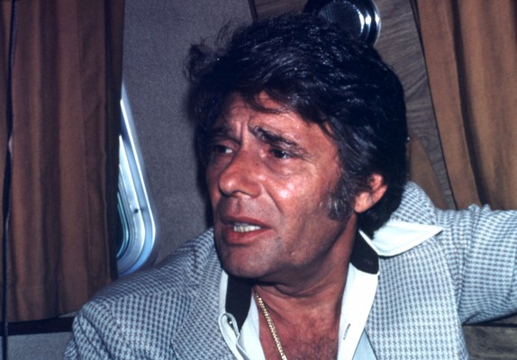
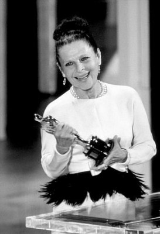
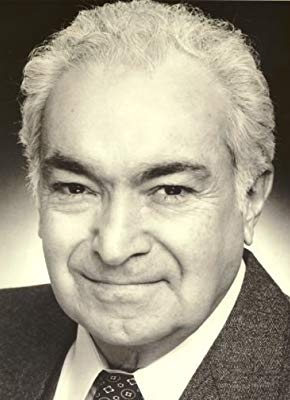
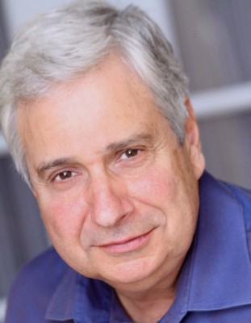
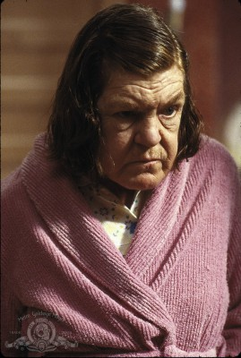
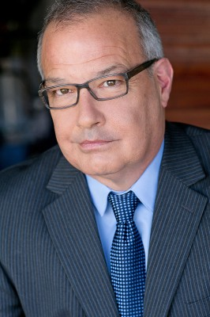
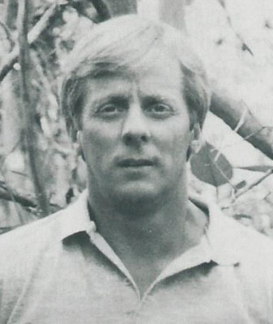
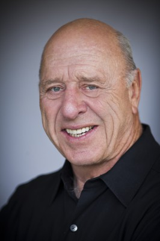

#4119 Mit Vollgas nach San Fernando
Alternativ: Any Which Way You Can


 IMDB-Wertung: 6.0 / 10
IMDB-Wertung: 6.0 / 10  Metascore: 0
Metascore: 0 
Beddoe, dem sagenhaften Faustkämpfer, wird der Fight seines Lebens angeboten. Ein berüchtigter Berufsspieler will ihn gegen den härtesten und brutalsten Schläger der ganzen Ostküste antreten lassen. Das Problem dabei: Beddoe hat sich über beide Ohren in eine attraktive Country-Sängerin verliebt und die will mit allen Mitteln verhindern, daß das geliebte Antlitz ihres Helden verunziert wird. Bei der Fahrt zum Austragungsort des Kampfes, quer über den amerikansichen Kontinent wird Beddoe nicht nur von einer Rockerbande verfolgt, sondern hat auch sonst jede Menge faustdicke Prügeleien zu bestehen.
Jahr: 1980
Dauer: 115 Minuten
FSK: 12
Land: USA Studio: Warner Bros.Tonspuren:
Untertitel:
Auflösung: 720p (1280x720) Größe: 4474 MB
Genre: Action, Komödie
Regisseur: Buddy Van Horn
Drehbuch: James Carter Cathcart
Soundtrack:
Darsteller:
 Clint Eastwood als Philo Beddoe
Clint Eastwood als Philo Beddoe Sondra Locke als Lynn Halsey-Taylor
Sondra Locke als Lynn Halsey-Taylor Geoffrey Lewis als Orville
Geoffrey Lewis als Orville William Smith als Jack Wilson
William Smith als Jack Wilson-  Harry Guardino als James Beekman
-  Ruth Gordon als Ma
 Michael Cavanaugh als Patrick Scarfe
Michael Cavanaugh als Patrick Scarfe Barry Corbin als Fat Zack
Barry Corbin als Fat Zack Roy Jenson als Moody
Roy Jenson als Moody Bill McKinney als Dallas
Bill McKinney als Dallas John Quade als Cholla
John Quade als Cholla-  Al Ruscio als Tony Paoli Sr.
 Dan Vadis als Frank
Dan Vadis als Frank- Camila Ashland als Hattie
 Julie Brown als Candy
Julie Brown als Candy- Glen Campbell als Glen Campbell
- Richard Christie als Jackson Officer
 Dick Durock als Joe Casey
Dick Durock als Joe Casey- Michael Fairman als CHP Captain
 James Gammon als Bartender
James Gammon als Bartender- Peter Hobbs als Motel Clerk
 Art LaFleur als Baggage Man #2
Art LaFleur als Baggage Man #2-  Ken Lerner als Tony Paoli, Jr.
 George Murdock als Sgt. Cooley
George Murdock als Sgt. Cooley- Ann Nelson als Harriet
-  Anne Ramsey als Loretta Quince
 Michael Talbott als Officer Morgan
Michael Talbott als Officer Morgan-  Mark L. Taylor als Desk Clerk
- Jerry Brutsche als Black Widow
-  Larry Holt als Black Widow
- Walter Robles als Black Widow
- Fats Domino als Fats Domino , uncredited
-  George Fisher als Bar Fighter , uncredited
- Roy Lewis Garton als Betting Guy at BBQ , uncredited
- Donald Gibb als Henchmen , uncredited
 Chuck Hicks als Fight Spectator , uncredited
Chuck Hicks als Fight Spectator , uncredited Buddy Joe Hooker als Bar Fighter , uncredited
Buddy Joe Hooker als Bar Fighter , uncredited R.C. Keene als Fight spectator at Jackson Town Sq. , uncredited
R.C. Keene als Fight spectator at Jackson Town Sq. , uncredited- Manis the Orangutan als Clyde , uncredited
- Debby Porter als Trucker , uncredited
 William O'Connell als Elmo
William O'Connell als Elmo- Beans Morocco als Baggage Man
- Michael Brockman als Moustache Officer
- Rebecca Clemons als Buxom Bess
- Reid Cruickshanks als Bald Headed Trucker
- Michael Currie als Wyoming Officer
- Gary Lee Davis als Husky Officer
- Weston Gavin als Beekman's Butler
- Lance Gordon als Biceps
- Lynn Hallowell als Honey Bun
Datei: X:\2-Dilogie(G-M)\Mann aus San Fernando\Mit Vollgas nach San Fernando (1980, FSK12, 1280x720).mkv seit 25.07.2016
Festplatte: HD Collection-2(A-Z)-3(A-M)
 Alle Filme aus Gruppe '2-Dilogie(G-M)\Mann aus San Fernando'
Alle Filme aus Gruppe '2-Dilogie(G-M)\Mann aus San Fernando'